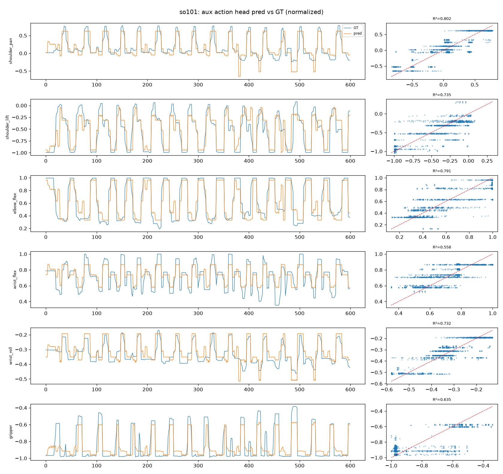
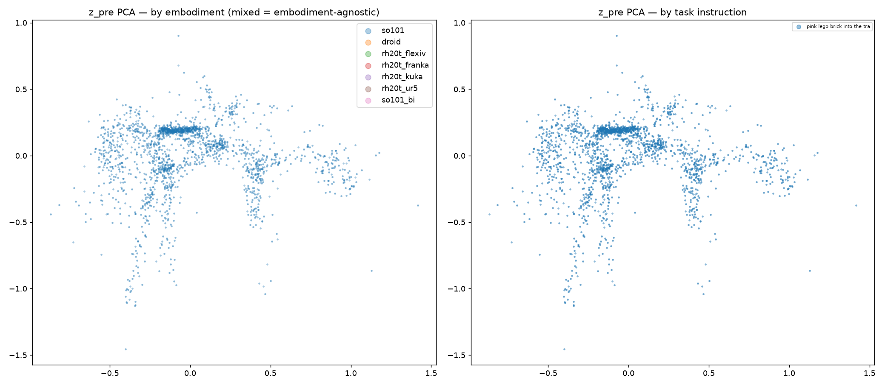
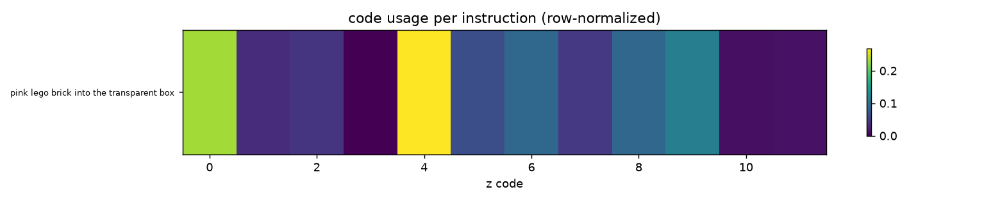

Latest: r1-lam-cb12-s0
6a3df08
2026-08-07T23:41:11+00:00
—
online success (held-out seeds)
first run
2.854
capacity_bits/so101 (codebook watch)
+0.033 vs prev
0.885
entropy_below_z/so101
-0.041 vs prev
550
LIBERO demos (frozen budget)
first run
Success trend (0 evaluated runs)
Model fit — latest run media
fdm_recon_so101.mp4

action_pred_so101.png

z_scatter.png

z_task_heatmap.png
Sample journeys (step-by-step pipeline traces)
none in latest run